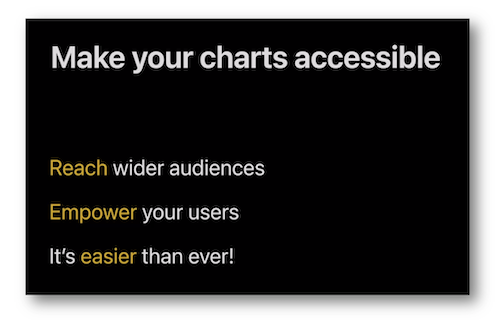
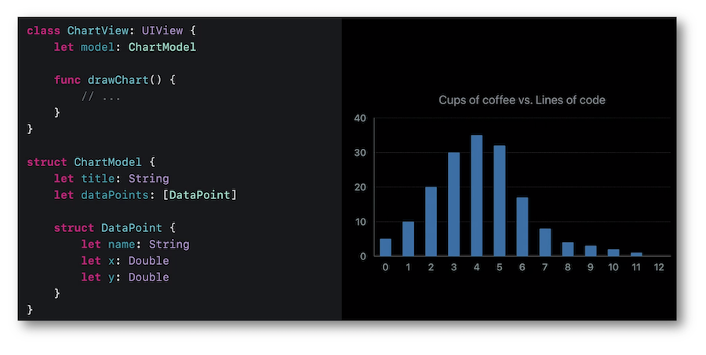
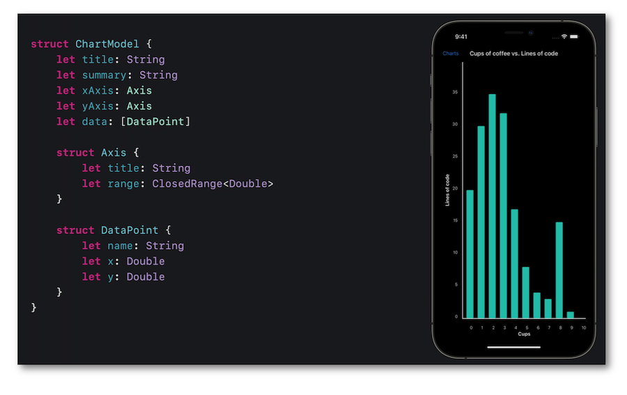
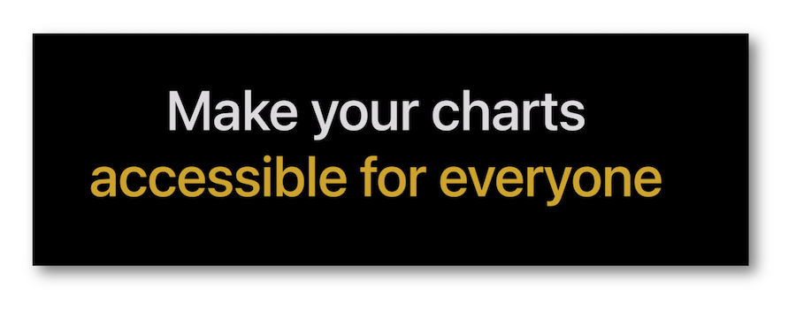

WWDC 2021: Bring accessibility to charts in your app
This video available on the official Apple website (session 122) introduces an iOSÂ 15 new feature to vocally present charts information and highlights its implementation based on accurate examples.

Various contents and their video timelapse are indicated hereunder:
-
Introduction (01:29)
-
Basic implementation (10:22)
-
Audio graph implementation (14:17) ⟹ new in iOS 15
Introduction (01:29) #
The thrust of this iOSÂ 15 new feature lies in the use of a simple variable intensity sound system to emphasize the value deviations on a graph.
The first example is built around a line chart to understand the basics.

The second example highlights scatter plots of a graph that are optimized for VoiceOver in order to significantly improve the speech understanding of the displayed data.

When this feature is activated, some explanations about the graph content are added at the bottom of the screen.

Besides the inclusiveness to everyone, adding the audio graph feature to a chart brings an even finer granularity to the auditory use of the displayed data.

Design criteria for sight impairment (06:44) #
In order to bring the render of a chart as accessible as possible, some important design criteria are explained and detailed relying on efficient examples to feel better their real scope.
-
Use high contrast colors ⟹ 🎬
-
Avoid using both red and green ⟹ 🎬
-
Avoid using blue and yellow concomitantly ⟹ 🎬
-
Use symbols in addition to color ⟹ 🎬
-
Reduce use of transparency ⟹ 🎬
If need be, further information about the design criteria including the accessibility options are available in the design section of this site.
Basic implementation (10:22) #
A simple bar graph will serve as a basis for this example.

To reach the goal of accessibility, use the guidelines as follows:
-
make the chart a
containerto aid VoiceOver in the navigation, -
provide an illustrative label to identify the chart,
-
create an accessibility element for each data point.

Following this rationale, the final rendering is optimized and perfectly comprehensible by the VoiceOver users.
Audio graph implementation (14:17) #
Few properties are added to the previous example in order to be used in the implementation of this iOSÂ 15 new feature.

It's mandatory to import the Accessibility framework available since iOSÂ 14 to use the AXChart protocol that contains all the required elements to define the audio graph feature.

The only step to be followed is the complete definition of the accessibilityChartDescriptor property based on the description of:
-
the axis
AXNumericDataAxisDescriptorthanks to the data model, -
the data points to be displayed as a
AXDataSeriesDescriptortype, -
the appropriate intializer that includes the previous definitions and the
Summaryelement that will be laid out at the botton of the screen.
These steps will set up a variable intensity sound system to emphasize the value deviations on a graph.
